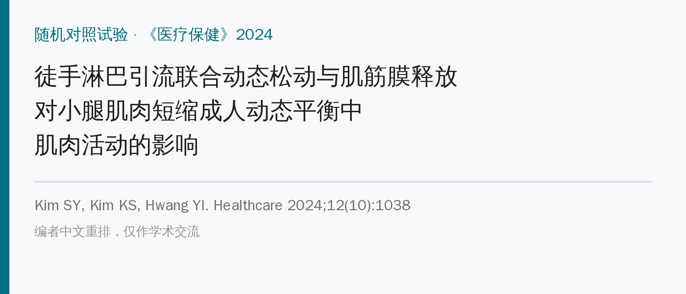
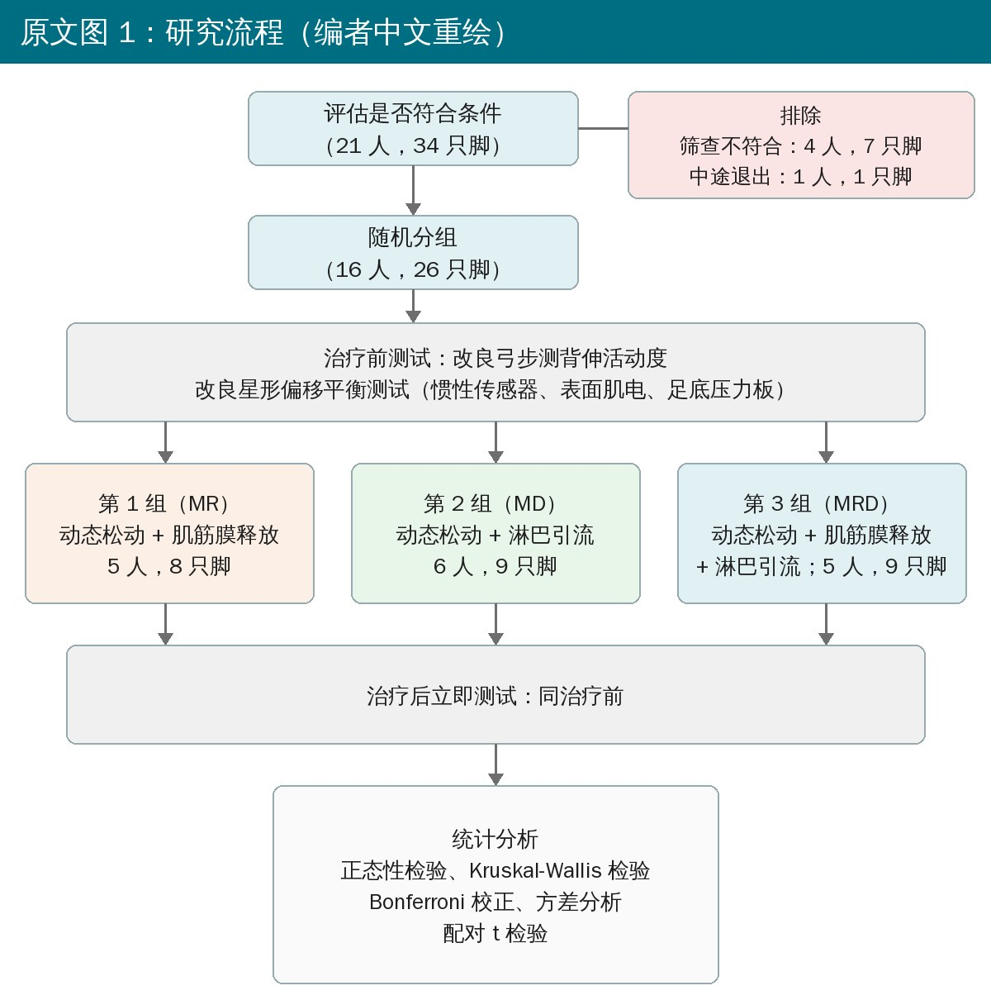
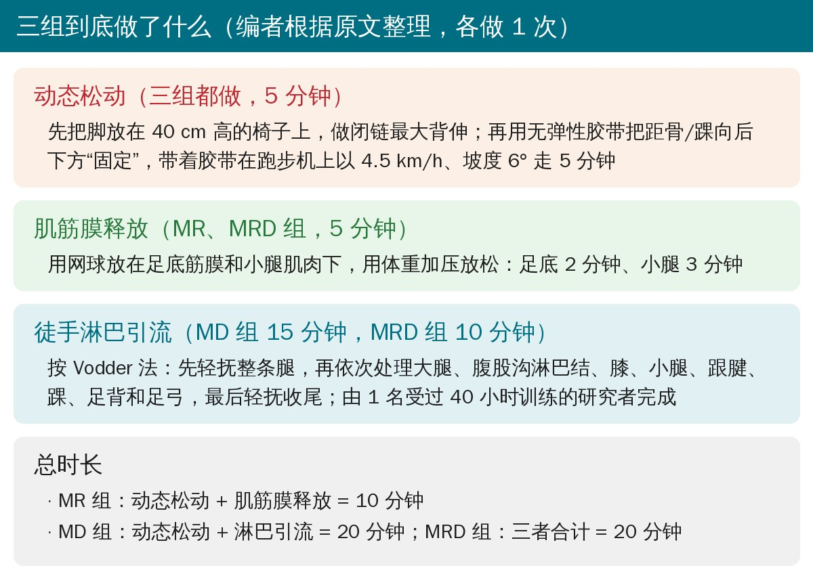
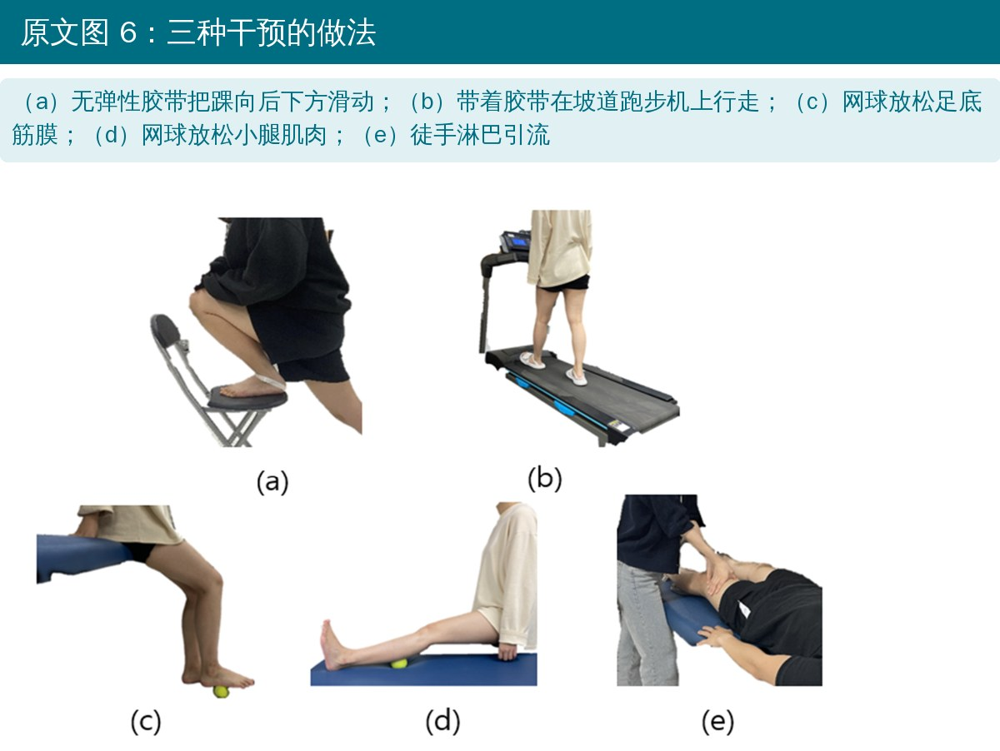
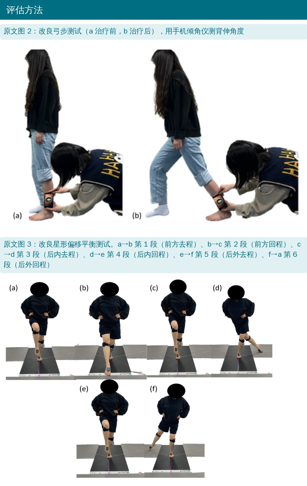
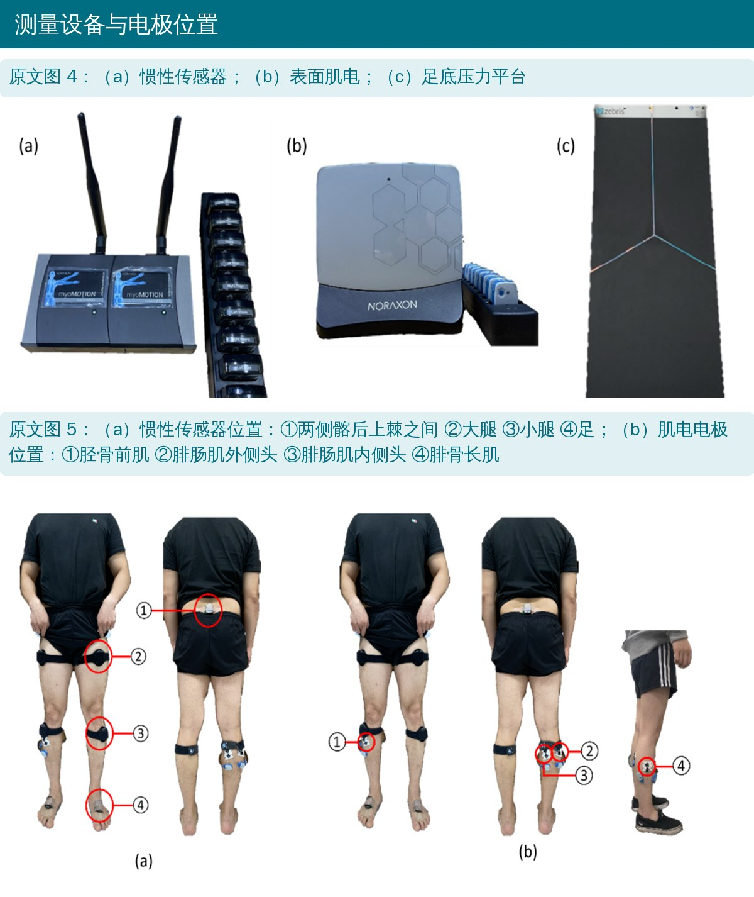
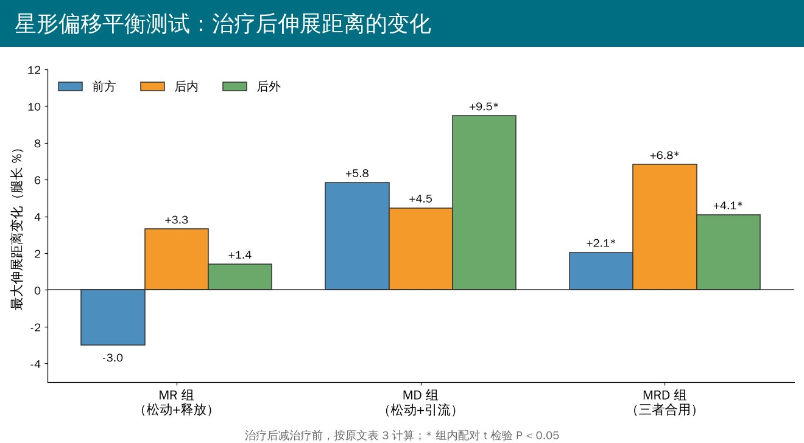

🔖原文信息（编者中文重排）
📚 文献信息
▪ Kim SY, Kim KS, Hwang YI. Effects of manual lymphatic drainage with mobilization and myofascial release on muscle activities during dynamic balance in adults with calf muscle shortening. Healthcare. 2024;12(10):1038. doi:10.3390/healthcare12101038
▪ 作者来自韩国湖西大学物理治疗系
▪ 小样本随机对照试验（三组之间比较，没有空白对照）
小腿肌肉短缩会限制踝背伸，背伸受限又会影响平衡，比如星形偏移平衡测试中向前伸得远不远，和负重弓步的背伸角度高度相关。
• Mulligan 动态松动：一边被动滑动关节、一边做主动功能动作，能改善踝背伸和平衡
• 肌筋膜释放：用网球压足底和小腿，放松筋膜、增加柔韧性
• 徒手淋巴引流：轻柔、有节律地牵拉皮肤，促进组织液回流，被认为能降低软组织张力
作者的设想是：松动和筋膜释放会让组织液发生变化，可能反过来限制效果；再加一道淋巴引流把组织液“排走”，效果会不会更好？
• 对象：二十多岁、小腿肌肉短缩的成年人。标准是俯卧伸膝时被动背伸不足 8°，且屈膝时背伸比伸膝时多 5° 以上（说明是腓肠肌紧），双腿长度差小于 2 cm
• 分组：16 人共 26 只脚，每只脚当作一个独立样本，随机分到三组：松动 + 筋膜释放（MR，8 只脚）、松动 + 淋巴引流（MD，9 只脚）、三者合用（MRD，9 只脚）
• 只做一次，做完立即复测
• 评估：改良弓步测背伸角度（手机倾角仪）；改良星形偏移平衡测试，同时用惯性传感器测关节角度、用表面肌电测胫骨前肌、腓骨长肌、腓肠肌内外侧头

🔖原文图 1：研究流程（编者中文重绘）

🔖三组方案（编者根据原文整理）

🔖原文图 6：三种干预的做法
• 先把脚放在 40 cm 高的椅子上，在闭链下做最大背伸
• 然后用无弹性胶带把踝“固定”在向后（原文一处写后内、一处写后下）滑动的位置上
• 带着胶带在跑步机上以 4.5 km/h、坡度 6° 走 5 分钟，相当于用胶带代替治疗师的手，在行走中持续做滑动
• 用网球垫在足底，用体重压着放松 2 分钟
• 再把网球垫在小腿后侧，压着放松 3 分钟
• 按 Vodder 法：先轻抚整条腿
• 再按顺序处理：大腿 → 腹股沟淋巴结 → 膝 → 小腿 → 跟腱 → 踝 → 足背 → 足弓，最后再轻抚收尾
• 由同一名受过 40 小时 Vodder 法训练的研究者完成
注意三组时间不一样长：MR 组 10 分钟，MD 和 MRD 组各 20 分钟。

🔖原文图 2、3：改良弓步测试和改良星形偏移平衡测试

🔖原文图 4、5：测量设备和传感器、电极位置

🔖星形偏移平衡测试中，各组治疗后伸展距离的变化（按原文表 3 计算）
• 背伸角度：三组之间整体比较 P = 0.048，但两两比较都没有差异；MR 组 27.6° → 28.5°，MD 组几乎没变（29.67° → 29.66°），MRD 组 29.6° → 30.7°
• 伸展距离：MRD 组前方、后内、后外三个方向都显著增加；MD 组只有后外方向增加；MR 组都没有显著变化
• 肌电：MRD 组在第 1 段的腓骨长肌、第 1 和第 4 段的腓肠肌内侧头激活高于其他组
• 作者结论：三者合用最能提高平衡测试中腓骨长肌和腓肠肌内侧头的激活
• 样本太小：作者自己算的需要 34 人，只纳入了 16 人（26 只脚），是预试验级别
• 一只脚当一个样本：同一个人的两只脚不是独立的，会人为放大样本量、让 P 值偏小
• 剂量不对等：MR 组只做 10 分钟，另两组 20 分钟；多出来的接触时间本身就可能有影响
• “肌电更高”到底好不好？平衡测试时肌肉激活更高，可能是控制更好，也可能是更费力。作者把 MRD 组激活升高解读为好事，又把 MD 组激活下降解读为“更省力、更高效”，两头都说好
• 只看了即刻效果，没有随访；对象是年轻健康人，不能直接推到患者
• 机制是推测：淋巴引流“排走组织间液”从而改善平衡，本文没有测任何组织液指标
• 同一个结果三种说法：腓肠肌内侧头第 5 段，摘要说是 MD 组和 MRD 组有差异（P = 0.004），结果正文说是 MR 组和 MRD 组（P = 0.004）、MR 组和 MD 组（P = 0.033），表 2 写的又是 MR vs MD 0.033、MD vs MRD 0.004
• P 值前后不一：骨盆旋转第 3 段，结果正文写 P = 0.024，表 2 和讨论写 P = 0.039
• 背伸角度被说成显著：讨论说 MRD 组在组间比较中背伸“显著增加”，但两两比较全都不显著（MR vs MRD P = 1.000，MD vs MRD P = 0.060）
• “增加超过 8%”对不上：讨论说 MRD 组后内方向伸展距离增加超过 8%，达到真实变化标准；按表 3 计算是 83.06 → 89.88，只增加了 6.8 个百分点
• 人数说法矛盾：正文说“共招募 16 人，1 人中途回家，排除退出者后共 16 人”；流程图却是 21 人接受评估、4 人筛查不合格、1 人退出
• 样本量计算没落实：按协方差分析算出需要 34 人，接着又说“评估了 34 只脚、纳入 26 只脚”；最后协方差分析也没用上（改用了非参数检验）
• 表 1 按“脚”数性别：MR 组只有 5 人，表里却写男性 7 人（87.5%）、女性 1 人，显然是按 8 只脚算的
• 设计名称不对：自称“析因设计”的随机对照试验，但三组都做了动态松动，并没有析因结构，也没有空白对照
• 盲法前后矛盾：方法说采用单盲（受试者不知道分组差异），局限性又说“没有进行盲法测试”
• 胶带滑动方向：正文写向“后内”滑动，图 6 图注写向“后下”滑动
• 引用错位：跑步机行走的动态松动方案引用的是文献 16，而文献 16 是样本量计算软件 G*Power 的说明论文
• 无依据的结论：讨论说 MR 组第 1 段肌电“显著下降”，但文中没有对肌电做任何组内前后比较
• 小错：“intestinal muscles（肠肌）”应为足内在肌；SENIAM 写成“Non-Invisible”（应为 Non-Invasive）；“ACOVA”应为 ANCOVA；资助声明写 2024 年、致谢写 2023 年
• 小腿紧、背伸受限的人，可以把三件事串起来：胶带辅助的坡道行走（松动）+ 网球放松足底和小腿 + 下肢淋巴引流，一次约 20 分钟
• 网球自我放松简单易行：足底 2 分钟、小腿 3 分钟，适合作为居家练习
• 淋巴引流的额外价值还不确定：本研究样本小、统计问题多，淋巴引流是否真的“锦上添花”还需要更严谨的研究
• 评估平衡时，除了伸展距离，也要看代偿：MD 组靠更多的骨盆旋转去“够”远，这不是真正的平衡改善
表 1 三组受试者基本情况（16 人，26 只脚）
| 项目 | MR 组 | MD 组 | MRD 组 | P |
|---|---|---|---|---|
| 年龄（岁） | 22.63 ± 1.51 | 24.44 ± 3.17 | 22.56 ± 0.53 | 0.095 |
| 身高（m） | 1.67 ± 0.06 | 1.73 ± 0.07 | 1.73 ± 0.10 | 0.192 |
| 体重（kg） | 72.48 ± 9.22 | 71.46 ± 10.80 | 68.94 ± 14.60 | 0.817 |
| BMI（kg/m²） | 25.86 ± 1.93 | 23.80 ± 2.66 | 22.81 ± 3.40 | 0.090 |
| 腿长（cm） | 84.71 ± 4.04 | 88.53 ± 3.85 | 87.59 ± 6.10 | 0.259 |
| 男 | 7（87.5%） | 7（77.8%） | 7（77.8%） | |
| 女 | 1（12.5%） | 2（22.2%） | 2（22.2%） | |
| 短缩侧：右 | 4（双侧 3） | 4（双侧 3） | 4（双侧 4） | |
| 短缩侧：左 | 4（双侧 3） | 5（双侧 3） | 5（双侧 4） | |
| 优势脚：右 | 8（100%） | 7（77.8%） | 9（100%） | |
| 优势脚：左 | 0（0%） | 2（22.2%） | 0（0%） |
计量资料为均值 ± 标准差。
表 2 三组干预前后变化的比较（均值 ± 标准差）
| 指标 | 时间 | MR（8 只脚） | MD（9 只脚） | MRD（9 只脚） | χ² | P | 两两比较（校正 P） |
|---|---|---|---|---|---|---|---|
| 背伸角度（°） | 前 | 27.62（5.30） | 29.67（2.67） | 29.57（3.02） | 6.06 | 0.048* | MR vs MD 0.200；MR vs MRD 1.000；MD vs MRD 0.060 |
| 后 | 28.45（5.27） | 29.66（2.13） | 30.67（3.20） | ||||
| 骨盆旋转（°），第 3 段 | 前 | 5.25（2.37） | 8.88（2.38） | 7.36（2.90） | 6.49 | 0.039* | MR vs MD 0.054；MR vs MRD 1.000；MD vs MRD 0.146 |
| 后 | 6.70（2.75） | 13.25（3.67） | 8.95（3.06） | ||||
| 腓骨长肌（%），第 1 段 | 前 | 54.71（35.9） | 66.87（12.78） | 60.92（26.04） | 9.01 | 0.011** | MR vs MD 0.352；MR vs MRD 0.008**；MD vs MRD 0.417 |
| 后 | 46.82（21.74） | 76.88（20.31） | 85.17（41.83） | ||||
| 腓肠肌内侧头（%），第 1 段 | 前 | 38.60（17.06） | 57.75（17.22） | 47.82（14.82） | 7.80 | 0.020* | MR vs MD 1.000；MR vs MRD 0.036*；MD vs MRD 0.068 |
| 后 | 28.72（8.54） | 47.14（12.55） | 53.62（12.97） | ||||
| 腓肠肌内侧头（%），第 4 段 | 前 | 68.53（41.39） | 94.44（71.61） | 60.13（22.62） | 7.71 | 0.021* | MR vs MD 1.000；MR vs MRD 0.052；MD vs MRD 0.049* |
| 后 | 47.12（10.50） | 66.65（18.62） | 82.21（43.39） | ||||
| 腓肠肌内侧头（%），第 5 段 | 前 | 32.40（17.21） | 45.39（9.23） | 39.49（15.35） | 11.70 | 0.003** | MR vs MD 0.033*；MR vs MRD 1.000；MD vs MRD 0.004** |
| 后 | 35.88（15.56） | 30.33（6.81） | 53.95（32.14） |
MR：动态松动 + 肌筋膜释放；MD：动态松动 + 淋巴引流；MRD：三者合用。肌电为最大自主等长收缩的百分比。* P < 0.05，** P < 0.017。
表 3 各组组内最大伸展距离的比较（腿长 %，均值 ± 标准差）
| 组别 | 方向 | 治疗前 | 治疗后 | t | P |
|---|---|---|---|---|---|
| MR | 前方 | 89.69 ± 7.27 | 86.70 ± 5.97 | 1.53 | 0.171 |
| 后内 | 80.91 ± 9.50 | 84.22 ± 7.97 | −1.95 | 0.093 | |
| 后外 | 96.21 ± 11.96 | 97.62 ± 14.75 | −0.31 | 0.767 | |
| MD | 前方 | 84.71 ± 9.28 | 90.55 ± 14.93 | −1.82 | 0.106 |
| 后内 | 82.77 ± 13.74 | 87.23 ± 11.15 | −1.25 | 0.246 | |
| 后外 | 87.68 ± 11.88 | 97.15 ± 13.70 | −2.37 | 0.045* | |
| MRD | 前方 | 91.63 ± 12.14 | 93.68 ± 10.92 | −2.94 | 0.019* |
| 后内 | 83.06 ± 9.87 | 89.88 ± 11.70 | −3.08 | 0.015* | |
| 后外 | 100.28 ± 13.52 | 104.37 ± 16.27 | −2.71 | 0.027* |
* P < 0.05。
欢迎关注悦美力公众号，获取更多物理治疗的专业知识！
📄参考文献：
Kim SY, Kim KS, Hwang YI. Effects of manual lymphatic drainage with mobilization and myofascial release on muscle activities during dynamic balance in adults with calf muscle shortening. Healthcare. 2024;12(10):1038. doi:10.3390/healthcare12101038
原文以 CC BY 4.0 协议开放获取。本文为学术交流用的中文解读：图 1 为编者中文重绘，图 2～6 引自原文（加中文说明），方案卡和伸展距离变化图为编者根据原文绘制，表格为编者翻译。